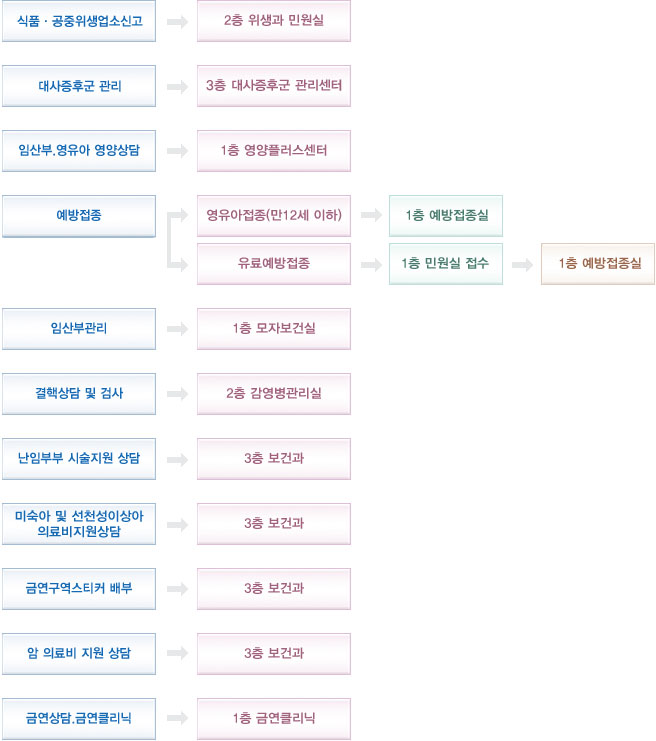

| 민원종류 | 수수료 | 처리기간 | 구비서류 | 처리과 |
|---|---|---|---|---|
| 건강진단서 | 1,500원 | 접수일로부터4일 (토·공휴일제외) |
|
민원실 2147-3450 |
| 건강진단결과서 (구 보건증) |
1,500원 | 접수일로부터4일 (토·공휴일제외) |
|
민원실 2147-3450 |
| A형간염검사 | 14,500원 | 접수일로부터6일 (토·공휴일제외) |
IT건강증진센터 2147-3539 |
|
| B형간염검사 | 5,630원 | 접수일로부터3일 (토·공휴일제외) |
||
| C형간염검사 | 9,400원 | 접수일로부터6일 (토·공휴일제외) |
